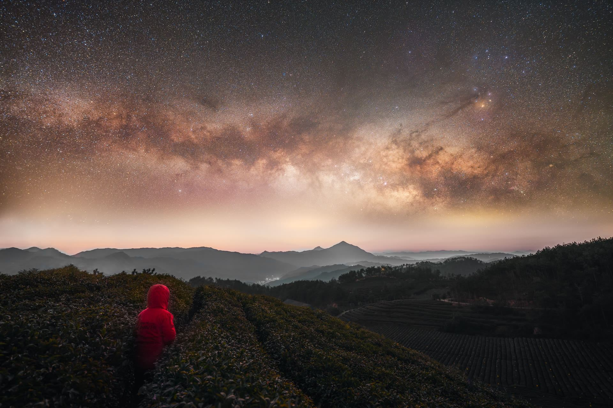
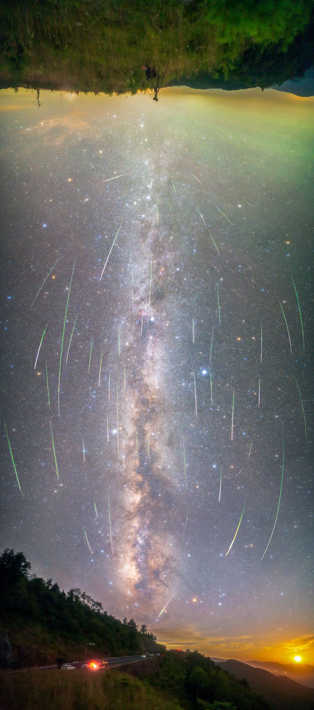
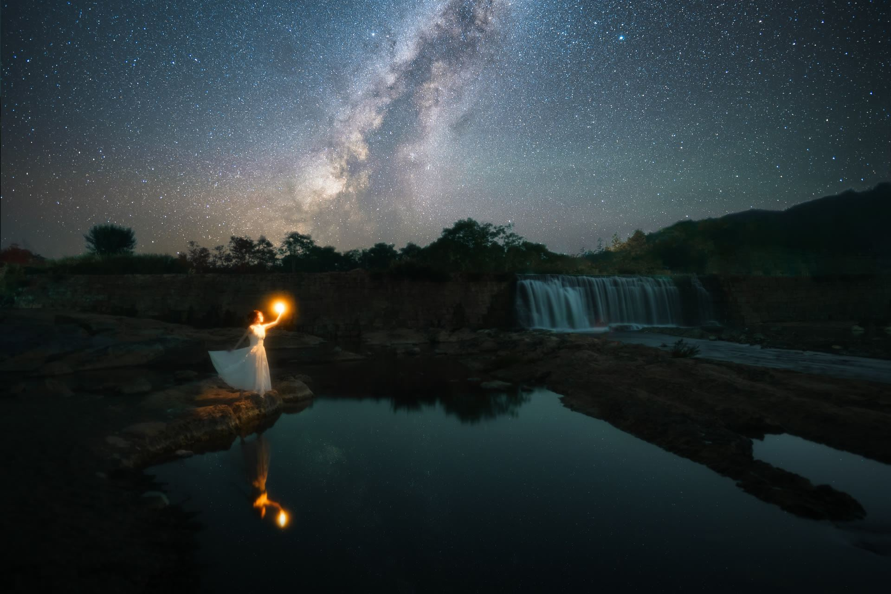
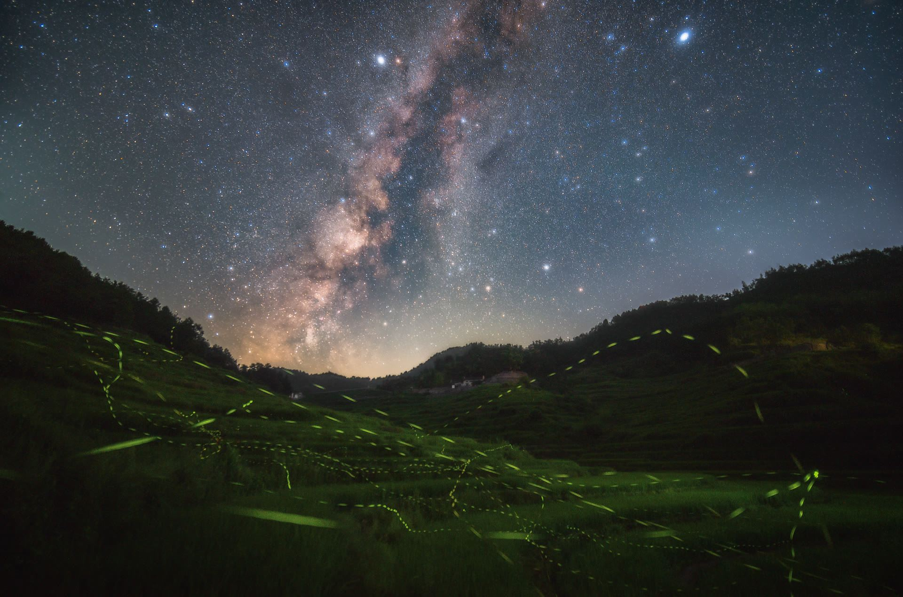
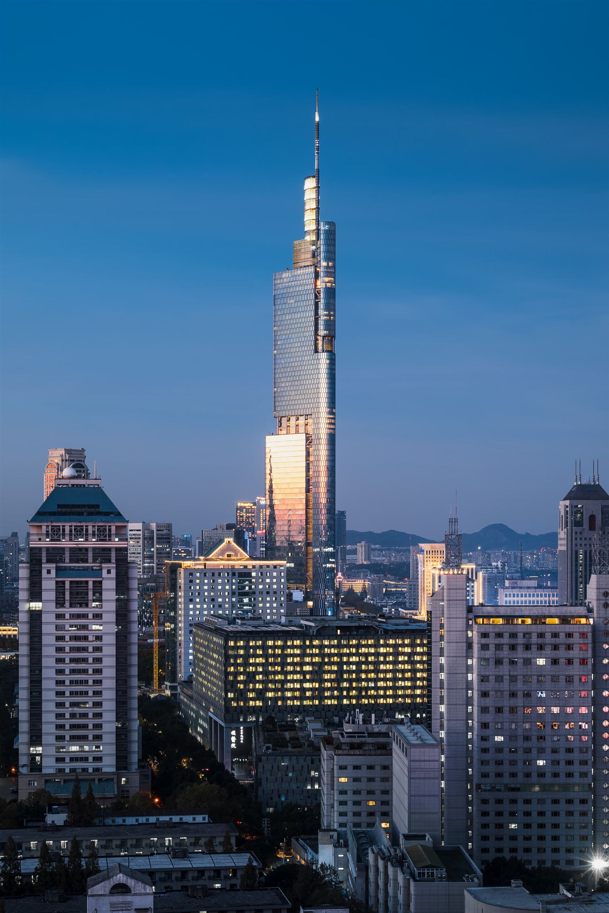
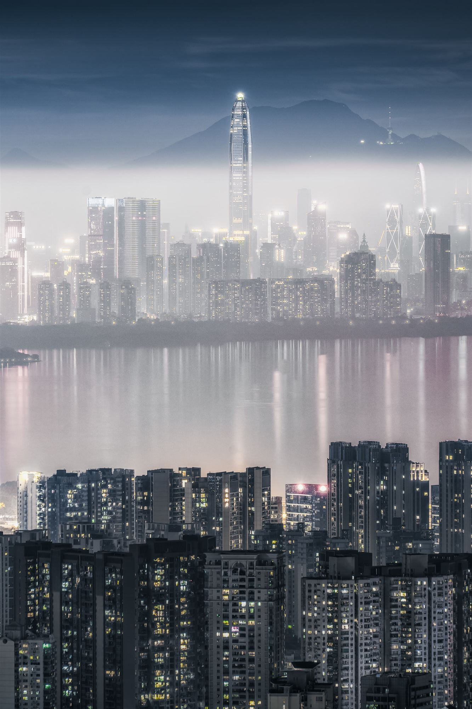
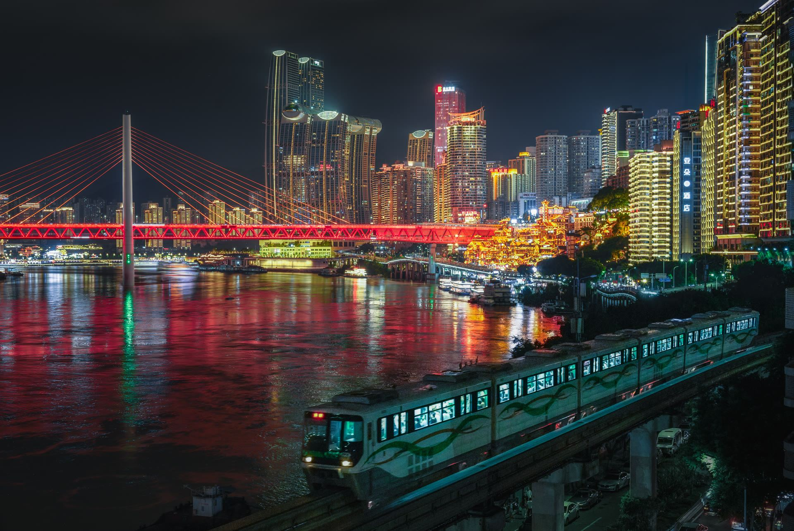

Selected
精选作品
01

STAR观星台
02

STAR追光者
03

STAR银河垂落
04

STAR星瀑
05

NATURE银河梯田
06

NATURE雪山古城
07

CITY金陵天际
08

CITY津门夜色
09
NATURE雪山河谷
10

NATURE山涧瀑布
11

NATURE日照金山
12

NATURE湖光暮色
13

CITY龙门夜影
14
NATURE海畔晚霞
15

CITY鹏城雾影
16

CITY山城夜色
17

CITY岛城海岸